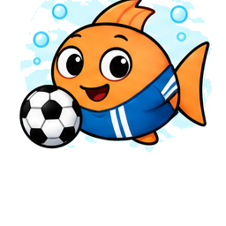

Memory z Dorszami
Odszukaj cztery pary mieszkańców.
Jak grać: odkrywaj po dwie karty. Para zostaje na planszy, pomyłka wraca do bąbelka.
Znajdź wszystkie pary!
Witaj pod wodą!
Kraina, w której każdy Dorsz ma swoją historię
Przygoda, nauka, przyjaźń i wyobraźnia czekają pod wodą!
Ryby też mają marzenia!
W Dorszolandii każdy ma wyjątkowy talent. Poznaj naszych bohaterów!
Kliknij i wyrusz w podróż
Odkryj najciekawsze miejsca w Dorszolandii.

Dorszuś, Borys i mieszkańcy miasta
Dwadzieścia ukończonych, pełnych opowieści do czytania rozdział po rozdziale.
Graj, myśl, próbuj jeszcze raz
Każda gra działa od razu — wybierz jedną i podejmij wyzwanie.
Odszukaj cztery pary mieszkańców.
Jak grać: odkrywaj po dwie karty. Para zostaje na planszy, pomyłka wraca do bąbelka.
Przeczytaj podpowiedź i wybierz odpowiedź.
Jak grać: przeczytaj opis, wybierz zawód i sprawdź odpowiedź. Każda nowa zagadka losuje inną postać.
Klikaj piłkę, zanim odpłynie!
Jak grać: uruchom 15 sekund treningu i kliknij piłkę przed kolejnym strzałem.

Obrony: 0Rekord: 0Czas: 15 s
Odszukaj cztery ukryte skarby.
Jak grać: znajdź i kliknij cztery ukryte skarby. Złoty błysk oznacza trafienie.
Znajdź 4 ukryte skarby. Klikaj tylko różne elementy!
Każdy talent jest ważny
Nie wiesz, od czego zacząć? Wylosuj mieszkańca i odkryj jego supermoc.
Twoja wyobraźnia prowadzi
Dodawaj akcesoria na rybkę i przeciągaj je w wybrane miejsce.

Wiedza w bąbelkach
Przewodnik po mieście, oceanie, mieszkańcach i ukończonych historiach Dorszo-Kumpli.